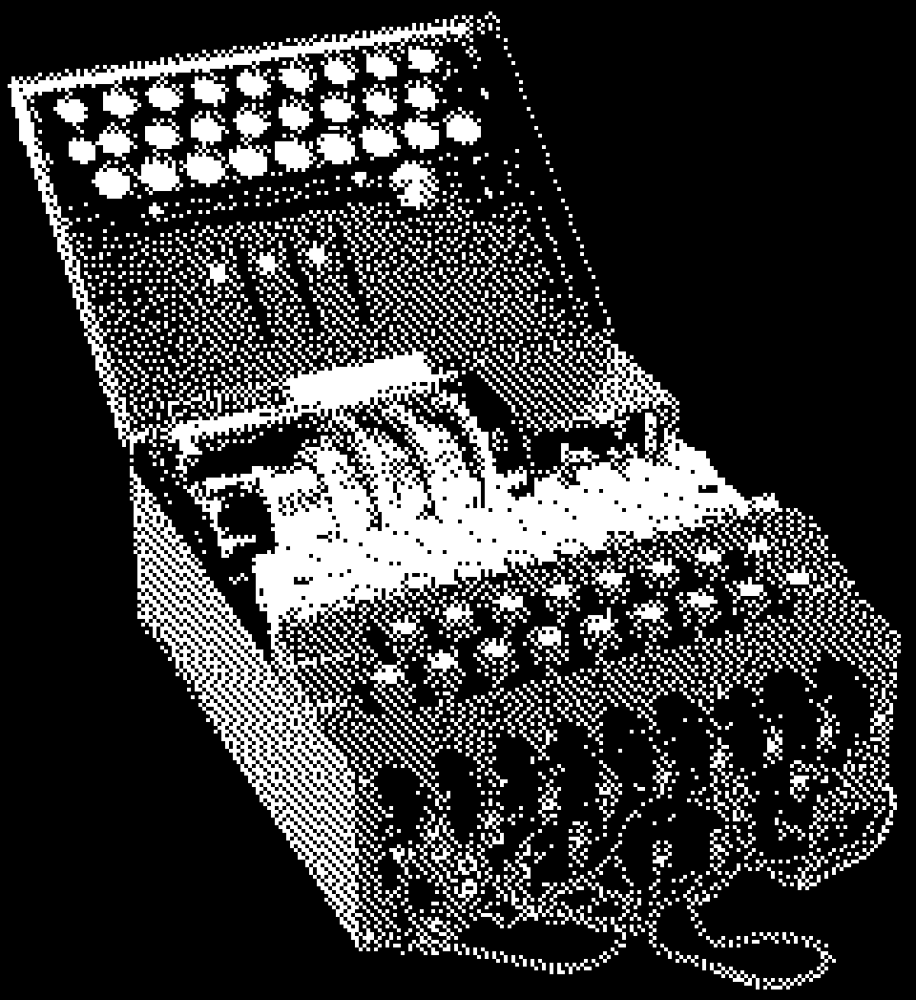

Aa
Panchang
Variable · 200–800
Hier: Bold 700 / Extrabold 800
KRYPTO, WAS?
0123456789 ÄÖÜ
Station 04 / Maschinen verschlüsseln
Wie wird aus einer Nachricht ein Geheimnis? Entdecke, wie Buchstaben verschlüsselt werden – und probiere es selbst aus.
Eine Maschine, viele Möglichkeiten: Bei jedem Tastendruck verändert sich die Zuordnung der Buchstaben. Nur mit dem passenden Schlüssel wird die Nachricht wieder lesbar.
Ausprobieren

Drei Fonts, alle 13 Textstile. Jede Probe erscheint in ihrer tatsächlichen Größe. Ändere die Pixelwerte und vergleiche die Wirkung direkt auf dem Tablet.
Aa
Variable · 200–800
Hier: Bold 700 / Extrabold 800
KRYPTO, WAS?
0123456789 ÄÖÜ
Aa
Variable · 100–900
Hier: Regular 400 / Medium 500
Nachrichten werden lesbar.
Auch kursiv. Ää Öö Üü ß
AZ
Light 300 / Regular 400 / Medium 500
Immer in Versalien
A → D / 01001011
300 / 400 / 500
Baton Turbo ist im Design-System benannt, aber nicht als Font-Datei vorhanden. Für diesen Master werden die drei verfügbaren Schriften verwendet.
Lokale Arbeitswerte · Größen in CSS-Pixeln · Änderungen gelten bis zum Neuladen.
Ein kleiner Stationsablauf mit echten Zuständen: Eingabe, Auswahl, Ausgabe und Vertiefung. Beispielinhalt nach Station 02.
Station 02 / Verschlüsseln mit System
Wähle ein Wort oder schreibe eine Nachricht. Jeder Buchstabe wird um drei Stellen verschoben.
Bis zu 24 Zeichen. A–Z werden verschlüsselt; Umlaute und andere Zeichen bleiben erhalten.
Aus HALLO wird KDOOR. Die Regel bleibt bei jedem Buchstaben gleich.
Was steht hier?
KDOOR
Verschiebe jeden Buchstaben um drei Stellen zurück.
Bereit für deinen Versuch.
Buttons verwenden DM Mono im Label-Stil.
Hinweis: Aktive Elemente sind orange markiert und zusätzlich durch ihre Form oder Beschriftung erkennbar.
Schwarz, Weiß und Grau tragen den Inhalt. Orange kennzeichnet Aktionen und Auswahl. Blau öffnet die Informationsebene.
Sekundäre Information auf der Grundfläche.
Zusammengehörige Inhalte in einem abgegrenzten Bereich.
Hervorgehobene Information in einer eigenen Ebene.
Platz zum Lesen. Platz zum Tippen.
24 Spalten als Grundraster, 32 px Außenabstand und 24 px zwischen Modulen. Im Hochformat rücken die Module untereinander. Lange Inhalte bleiben vertikal scrollbar.
Dieser Master ist eine separate Tablet-Arbeitsfläche mit eigenen Größen. Beispieltexte sind Platzhalter, keine finalen Ausstellungstexte.